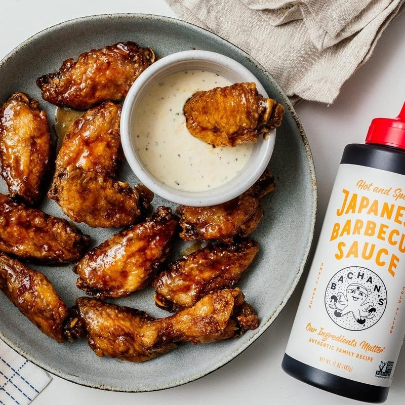

健康饮食网站Eating Well专栏作家希克曼（Kiersten Hickman）表示，最近她发现一款神奇的酱料：Bachan’s日式烧烤酱，百分之百物有所值，让她甚至考虑买下每一种口味；更棒的是，「好市多就有卖」。
希克曼说，有诸多理由让她爱上这款酱料，但最值得称道的是它堪称万用「神酱」，是厨房里的MVP；可以为方便面、烧烤食物、炒饭、三明治与早餐煎蛋等周末餐点增添风味，而在只需一种简单美味的腌料时，这款酱汁也很适合。有兴趣者可在Bachan’s的网站找到各种先前可能从未想过的有趣使用方法，例如将此酱料加在味噌巧克力起司蛋糕或鸡尾酒「血腥玛丽」中。
其次，希克曼表示，Bachan's日式烧烤酱的制作材料也十分讲究，采用了新鲜有机大蒜、生姜与青葱，不使用任何粉末或脱水成分；再混合了日本古法酿造的非基改酱油（经加工及陈年酿造，风味更浓郁）、高品质味醂（米酒）与有机米醋。这款烧烤酱采少量生产，低温封装，不含化学物质双酚A。
虽然原味Bachan’s日式烧烤酱已能满足多种用途，但希克曼尤其喜欢多种各式各样的口味。她说，柚子柑橘口味是她个人的最爱，是蔬菜面、炒饭甚至烤蔬菜串等蔬食菜肴的理想酱料；此外，味噌口味是腌制烤鲑鱼的最佳酱料，甜蜂蜜口味可淋在汉堡上，Hella Hot口味适合升级版的纳许维尔热鸡肉三明治，麻辣口味则完美提升烤肋排。
Bachan’s日式烧烤酱在卖场好市多（Costco）买得到，没有会员卡的人，可以在许多超市或Bachan’s的网站上找到它们。每瓶售价在7.99至9.99元间，或者以44.99元的价格购买一整套，其中包括The Flavor Explorer口味。
好市多的会员有福了，Bachan’s日式烧烤酱原装容量为16盎司，但在好市多，只需不到10元就能买到更大瓶的原味日式烧烤酱，足足有34盎司，是烹饪与淋酱时少不了的终极调味品与酱料。除了超大瓶装，Bachan’s还在好市多推出16盎司、3种口味一套的包装，可以低于20 元的价格各买到一瓶麻辣口味、柚子口味与味噌口味。